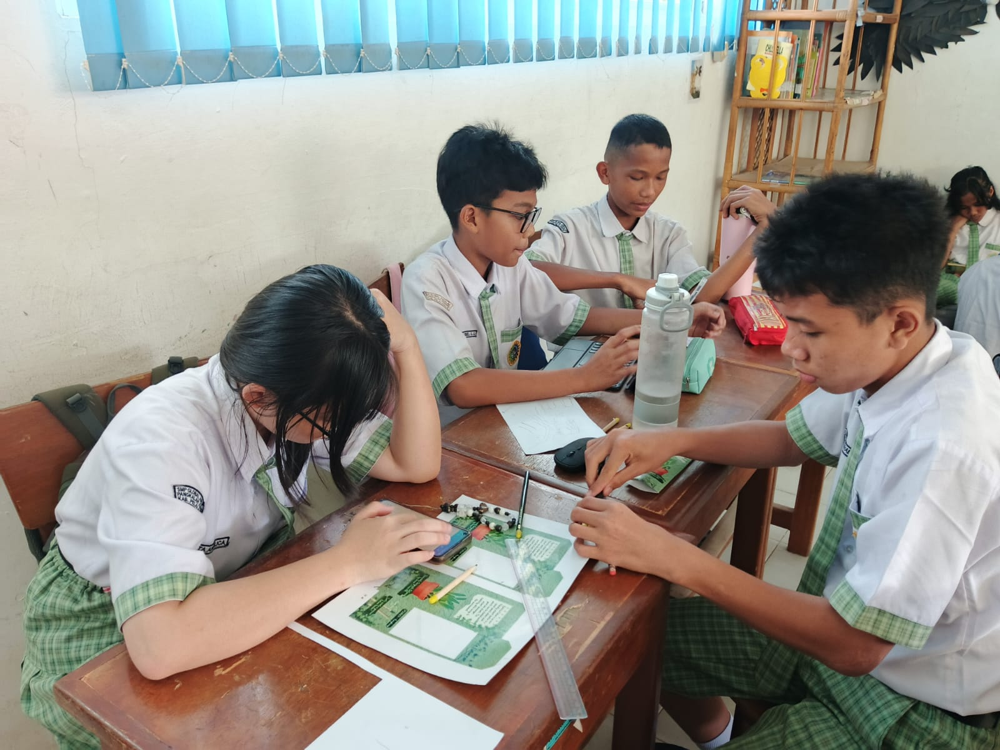
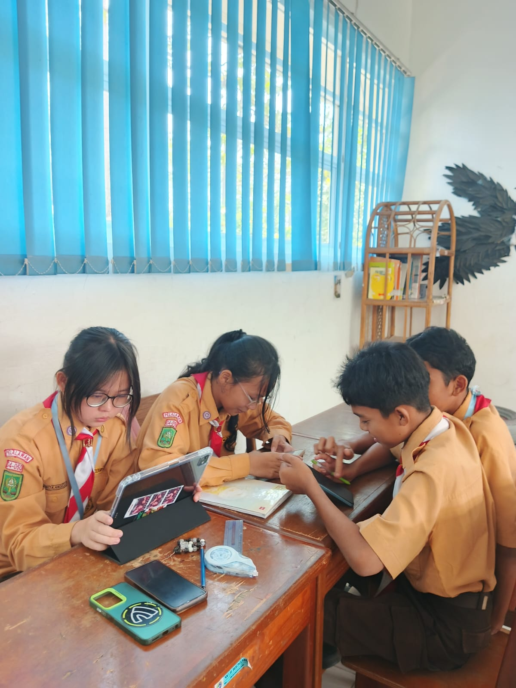

Pengembangan Ilmiah
Penyusunan Karya Tulis Ilmiah (KTI) ini merupakan tahap krusial untuk memperkuat landasan teori dari inovasi "Rewrite Future". Melalui riset mendalam, kami menganalisis dampak penggunaan limbah alat tulis terhadap lingkungan dan bagaimana solusi pensil benih dapat berkontribusi pada keberlanjutan ekosistem secara ilmiah dan aplikatif sesuai dengan parameter SDGs Nomor 12.
Penyusunan Laporan & Analisis Data

Tahap Riset Literasi

Proses Finalisasi Laporan
Setiap kata yang kita tulis hari ini adalah investasi bagi bumi di masa depan. Mari berhenti menyisakan limbah, dan mulai menanam harapan.
Selesai Menelusuri?
Kembali ke Beranda Proyek